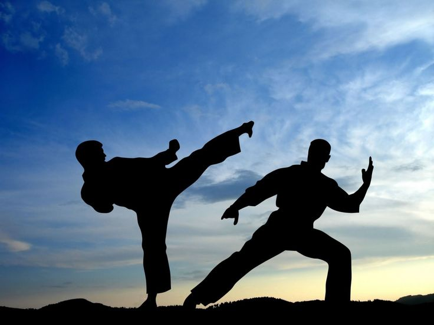

History of Karate
Karate originated in Okinawa, Japan, as a blend of indigenous fighting methods and Chinese martial arts. It developed into a distinct style during the 17th century and was introduced to mainland Japan in the early 20th century.
Today, karate is practiced worldwide for self-defense, discipline, sport, and physical fitness.
Styles & Rules
- Main styles include Shotokan, Goju-Ryu, Shito-Ryu, and Wado-Ryu
- Two main competition types: Kumite (sparring) and Kata (form demonstration)
- Points awarded for clean, controlled strikes
- Protective gear worn during competitions
- Emphasis on respect, balance, and discipline
Major Karate Competitions
- World Karate Championships (WKF)
- Karate1 Premier League
- Asian Karate Championships
- Olympic Games (debut in Tokyo 2020)
Famous Karate Practitioners
- Gichin Funakoshi (founder of Shotokan Karate)
- Rika Usami (Japan)
- Rafael Aghayev (Azerbaijan)
- Antonio Díaz (Venezuela)
- Bruce Lee (trained in Karate along with other styles)
Health Benefits of Karate
- Improves strength, speed, and flexibility
- Enhances coordination and body control
- Boosts self-discipline and mental focus
- Supports cardiovascular and muscular health
- Teaches self-defense and confidence
Global Reach
Karate is practiced in over 190 countries and continues to grow as a popular martial art. It is taught in schools, dojos, and fitness centers worldwide, making it a leading sport for physical and mental development.